Alpha Trade Academy · среда работы с рынком
ATA — инновационная платформа обучения трейдингу.
Последовательный путь: понять ситуацию, сформулировать собственное решение, проверить работу и продвинуться дальше.